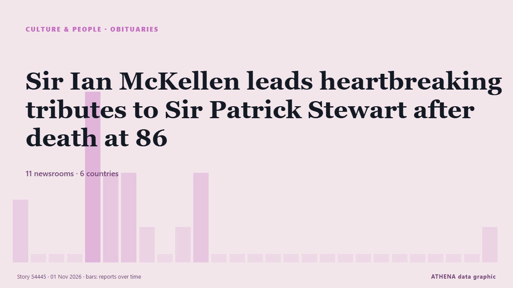

Necrológicas
| 20 oct | 0 |
|---|---|
| 21 oct | 0 |
| 22 oct | 0 |
| 23 oct | 0 |
| 24 oct | 1 |
| 25 oct | 0 |
| 26 oct | 2 |
| 27 oct | 0 |
| 28 oct | 1 |
| 29 oct | 3 |
| 30 oct | 2 |
| 31 oct | 1 |
| 1 nov | 0 |
| 2 nov | 0 |
Los titulares se muestran en inglés, tal como se publicaron.

Sir Ian McKellen leads heartbreaking tributes to Sir Patrick Stewart after death at 86
Tributes pour in for Sir Patrick Stewart after his death following a battle with Alzheimer’s disease. de Evening Standard (London)
Eric Bauza, voice of Bugs Bunny and Daffy Duck, dies at 46
Emmy-winning Canadian actor voices numerous Looney Tunes characters during career spanning more than 2 decades. de Anadolu Agency (English)
Kilkenny hurling legend TJ Reid calls time on 20-year career in black-and-amber
The icon has called time on his career after two decades with the Cats. de Irish Mirror
Hugh Jackman, William Shatner and George Takei among those paying tribute to Patrick Stewart
Stewart died on Wednesday (Oct 28) at the age of 86 after what his spokesperson described as a “brief and poignant journey” with Alzheimer’s disease and Lewy Body Dementia. de CNA (Channel NewsAsia)
Tributes to 'deeply loved' pensioner killed after telling child on e-bike to slow down
James Gbadamosi, 67, lost a happy future with his husband when he was viciously attacked on the street by thug Andre Wright-Walters. de MyLondon